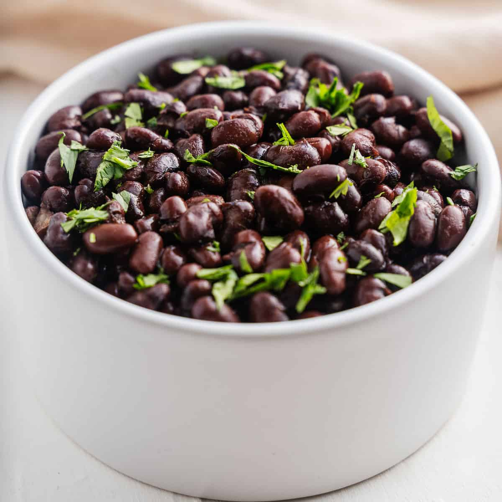

Best Black Beans

Description
This black beans recipe is ready in just 15 minutes! With a can of black beans, onion, and garlic from your pantry, plus some chopped fresh cilantro, this quick and easy side dish is a no-brainer when you're short on time. Pairs well with any Mexican or Cuban meal.
Ingredients
- 1 (16 ounce) can black beans, undrained
- 1 small onion, chopped
- 1 clove garlic, chopped
- 1 tablespoon chopped fresh cilantro
- ¼ teaspoon cayenne pepper
- salt to taste
Steps
- Gather all ingredients.
- Combine beans, onion, and garlic in a medium saucepan; bring to a boil.
- Reduce heat to medium-low. Stir in cilantro, cayenne, and salt. Simmer for 5 minutes.
- Remove from pot, sprinkle with cilantro, and serve.